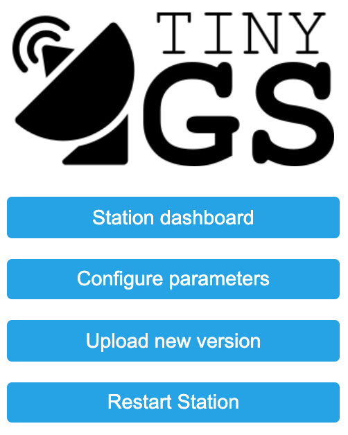
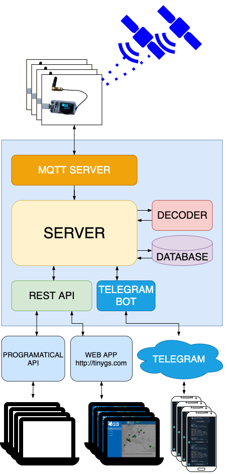

Home
TinyGS is an open network of Ground Stations distributed around the world to receive and operate LoRa satellites, weather probes and other flying objects, using cheap and versatile modules.
Hardware
This project is based on ESP32 boards and currently it is compatible with sx126x and sx127x LoRa módules but we plan to support more radio módules in the future.
Currently we are officially supporting the following proven LoRa boards:
- Heltec WiFi LoRa 32 V1 (433MHz & 863-928MHz versions)
- Heltec WiFi LoRa 32 V2 (433MHz & 863-928MHz versions)
- TTGO LoRa32 V1 (433MHz & 868-915MHz versions)
- TTGO LoRa32 V2 (433MHz & 868-915MHz versions)
- TTGO LoRa32 V2 (Manually swapped SX1267 to SX1278)
- T-BEAM + OLED (433MHz & 868-915MHz versions)
- T-BEAM V1.0 + OLED
- FOSSA 1W Ground Station (433MHz & 868-915MHz versions)
- ESP32 dev board + SX126X with crystal (Custom build, OLED optional)
- ESP32 dev board + SX126X with TCXO (Custom build, OLED optional)
- ESP32 dev board + SX127X (Custom build, OLED optional)
However, any ESP32 board with sx126x or sx127x módule can be configured using templates. You can find more info about them here.
Install
The first time download the latest release and flash it with PlatformIO. If you dont know PlatformIO here you have our PlatformIO guide.
Later you can update your Ground Station via local web OTA or auto update method.
You can also use Arduino IDE, but is a longer and hard path, because you need to install all dependencies. Arduino guide
Configuration
Check the configuration page
Main data website
All data received by TinyGS Ground Stations are showed at our TinyGS website
At this web you can see:
At your personal area you can edit some parameters of your Ground Stations remotely.
This is the main data recovery system, but we are developing an API to access data.
Local data access
You can access to your Ground Station data and configuration via local website at your

Also you can use the serial port of your board to see the basic console.
TinyGS network architecture

OTA update and Auto Tuning
Once your Ground Station is alive and connected it can be automagically updated with the last version by the server via OTA.
Also the Ground stations can be remote configured automagically (Auto Tuning) to be able to hear the next satellite pass with the correct settings.
Both systems are optional and you can opt-out at your Ground Station configuration, for example if you want to only support one specific satellite. But we recommend activating both to maintain the network health.
Community
We are using Telegram as the main communication channel for the project. There are also two channels where you can subscribe and be updated automátically whenever a new packet is received by the network from the Satellite.
- Main community chat
- Data channel station status and received packets
- Test channel RX packets by groundstations in test mode
History
Initially TinyGS was born under the name ESP32 Fossa Groundstation, it was developed as a "weekend" project for the FossaSAT-1 LoRa satellite. We are passionate about space and created this project to be able to track and use the satellites and to learn and experiment about radio. Currently the network is open to any LoRa satellite and we also support other flying objects that have a compatible radio modulation with our hardware such as FSK, GFSK, MSK, GMSK, LoRa and OOK. And the project was renamed to TinyGS.
Even though we have no relation with the Fossa team, they inspired this project and we are excited to support their new launched satellites into our network.
This are the more important moments of the project:
- Nov 28, 2019 ESP32-OLED-Fossa-GroundStation project born.
- Dec 6, 2019 FossaSAT-1 deployed with an Electron rocket by Rocket Lab.
- Dec 10,2019 YL3CT's GS receive the fist LoRa packet from FossaSAT-1
- Sep 28,2020 6U Norby LoRa satellite is deployed with a Soyuz-2-1b launcher
- Oct 11, 2020 KA9ETC's GS receive the first LoRa packet from Norby
- Jan 24, 2021 3x V-R3x sat deployed with a Falcon-9
- Jan 25, 2021 KA9ETC'S GS receive the first LoRa packet from V-R3x
- Feb 14, 2021 New name and web tinyGS.com with a new Beta firmware.
Contribute
You can contribute to TinyGS by
- Providing Pull Requests (Features, Proof of Concepts, Language files or Fixes)
- Testing new released features and report issues
- Contributing missing documentation for features and devices templates
Documentation
Getting started
Configuration
Useful resources
Other
Project dependencies
This project relies on several third party libraries:
- RadioLib
- ArduinoJson
- ESP8266_SSD1306
- IoTWebConf2
- PubSubClient
- ESPNTPClient
- FailSafeMode
You might also want to check out the other parts of this project:
- The web application: https://github.com/4m1g0/tinyGS-webapp
- The decoder modules: https://github.com/4m1g0/tinygs-decoders
TinyGS team
The main TinyGS developer team is:
Contributors
There are many people that contributed to this project in many different forms. We have a great active community in our Telegram group and we would really like to thank all the community support from contributions to the project to useful tips on the group. And, if your are still not part of it we would like to invite you to join it on Telegram.
License
This program is licensed under GPL-3.0